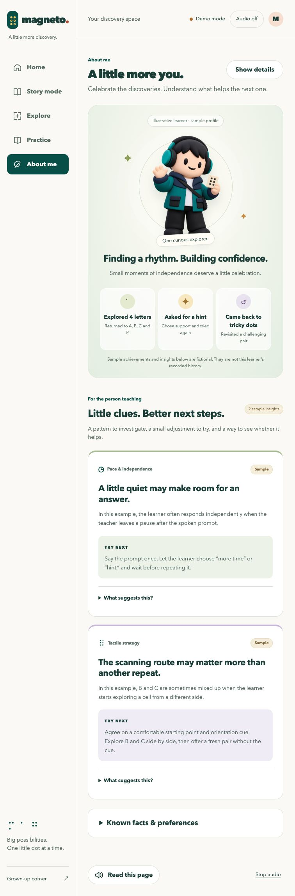

Magneto · Product audit · Proposed designShow what changed.
Help the next teaching decision.
The character and achievements create a welcoming surface. The strongest information is a dated, traceable account of what the learner did independently, what support helped, and what to try next.
There is no automatic post-story Personal Intelligence update today.The browser calls the story orchestrator when the teacher asks. The separate Databricks companion is stateless and returns a bounded tool plan. Book completion saves reading position; it does not create a learner profile. Current insights and achievements are fictional samples.
Current page screenshot

Every information item, rated
Scores measure potential teaching usefulness, not validity of the displayed claims. 1 = decoration or diagnostics; 3 = useful context; 5 = directly informs a teaching decision. A mocked 4/5 insight still has no real student evidence.
| Information | Value | Evidence today | Why / change needed |
|---|
| Character and “One curious explorer” | 1/5 | Decorative | Warm identity and ownership, but no evidence about learning. Keep it compact; let the learner choose the character. |
|---|
| “Finding a rhythm. Building confidence.” | 1/5 | Mock claim | Confidence is inferred without a student report or observable supporting events. Replace with a specific change or the learner’s own words. |
|---|
| “Explored 4 letters” | 2/5 | Mock | Exposure is not recognition. Add target, activity, support used and whether the learner recognized it again later. |
|---|
| “Asked for a hint” | 3/5 | Mock | Can celebrate self-advocacy. Currently the teacher clicks Give a hint, so the system cannot infer the student requested it. Record who requested support. |
|---|
| “Came back to tricky dots” | 3/5 | Mock | Useful persistence milestone when return is voluntary. Distinguish student choice from teacher-directed repetition; identify the pair and later outcome. |
|---|
| Learner-paced audio pause | 4/5 | Mock; inputs missing | Specific, testable adjustment. Current records lack prompt timing, repetitions and wait conditions. Small fictional comparisons cannot support a real causal claim. |
|---|
| Tactile orientation / B-C pattern | 4/5 | Mock; inputs missing | Useful error-pattern hypothesis. Current records lack starting position, orientation and exact confusion. Capture these explicitly rather than infer them from wrong answers. |
|---|
| Known facts & preferences | 4/5 | Local, user supplied | Useful personalization when source is clear. Separate student preference, teacher observation and AI hypothesis; record scope and review date. These facts do not reach the agent today. |
|---|
| Teacher observations | 5/5 | Real if recorded; temporary | Best existing evidence: target, activity, independent/with help/try later, hint used and teacher source. Lacks durable cross-session history, timestamps and support detail. |
|---|
| Recent demo responses | 2/5 | Local demo; synthetic context | Correct/incorrect/help is a coarse result and lacks tactile conditions or support. Keep demo evidence separate from real learning observations. |
|---|
| Latest agent teaching decision | 2/5 | Real result if requested | Explains an interruption, not student growth. Model reasoning is not a new observation. Keep it under details, linked to its supporting events. |
|---|
| Model name and latency | 1/5 | Technical metadata | Helpful for debugging, not choosing a teaching strategy. Move to a connection or diagnostics view. |
|---|
| Sync and hardware status | 2/5 | Operational status | Important for interpreting evidence; not a learner insight. Show a small honest status. Device failure must never become a learner error. |
|---|
| Learning now / observed counts / latest observation (removed) | 2/5 | Previously local evidence | Removing these reduced clutter. Recover useful context inside a session timeline rather than reintroducing isolated counters. |
|---|
A simpler, more useful About me
Student-facingMy discoveries
Keep the character, one concrete earned milestone and a short session journey. Celebrate choice, return and independence without rewarding speed or penalizing missed days.
Illustrative future content — not recorded student data“I recognized R in a new story.”
Teacher recorded an independent identification, without a naming hint. The learner can choose whether to celebrate this milestone.
Teacher detailsWhat helps me learn
At most two active insights. Each shows a pattern, its evidence, limits, one adjustment and whether that adjustment has been tried.
Illustrative future contentRecognition is carrying into a new context.
Evidence: R was identified independently in 3 of 4 comparable turns across two stories, including one later session. One other turn used a naming hint and is shown separately.
Next: offer one unfamiliar R example without a naming cue; record independent, supported, or deferred response.
Limit: this supports recognition in these tasks, not a general mastery claim.
Student journey: changes, not activity totals
Fictional example of a future timelineSession 1 · Peter Rabbit
Recognized R with a naming hint. Learner asked to hear the prompt again.
Session 2 · Peter Rabbit
Recognized R without a naming hint. Same tactile presentation; teacher confirmed independence.
Session 3 · A different story
Recognized R in a new example. First transfer observation; needs another comparable opportunity.
Show dates, story, target, task and assistance. Keep word recognition separate from letter recognition and introduction separate from identification. A saved page position means the reader advanced, not that the learner understood the story.
The proposed post-session update
- End or pause a learning session explicitly. A session can finish before the book does. Mark incomplete or no-observation sessions honestly.
- Save evidence first. Stable learner/session/event IDs, timestamps, story and target, task, exact cue or hint, teacher outcome, student request, source and relevant presentation conditions. Optional short teacher note; no diagnostic inference from response time.
- Run a separate read-only reflection. Compare the completed session with comparable prior events and stated preferences. The current action-planning agent should continue selecting bounded tools. Reflection must not execute tools, grade responses or turn transcripts into confirmed facts.
- Produce a small update. What changed, what helped, what remains uncertain, one next-session suggestion, and the IDs of supporting events. If evidence is insufficient: “No new pattern established.”
- Publish with review controls. Show observation vs AI hypothesis vs student preference vs teacher-confirmed fact. Teachers can correct or dismiss; student preferences stay editable. Only applicable, reviewed memory should inform later decisions.
- Handle retries honestly. One reflection per session revision; no duplicates, no physical action replay. Save the session if the cloud update fails and show pending/failed/updated with an explicit last-updated time. Recompute after corrected observations.
What we can and cannot derive today
Existing teacher records support target/activity/outcome/hint summaries within a temporary story session. They do not support cross-session trends, learner-selected interests, pause effectiveness, fatigue or scanning-route patterns. Those need additional explicit observations and durable learner-linked sessions. Existing local facts are not sent to the agent.
Any new reflection/profile integration needs its own agreed contract and storage implementation. Preserve the deployed demo and bounded action-plan contracts. No cloud deployment or application changes were performed for this audit.
Design source: existing Magneto colors, typography and card shapes, so the proposal stays consistent with About me. Ratings are product-design judgments.